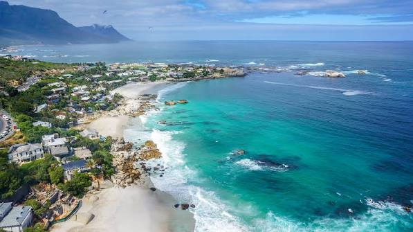
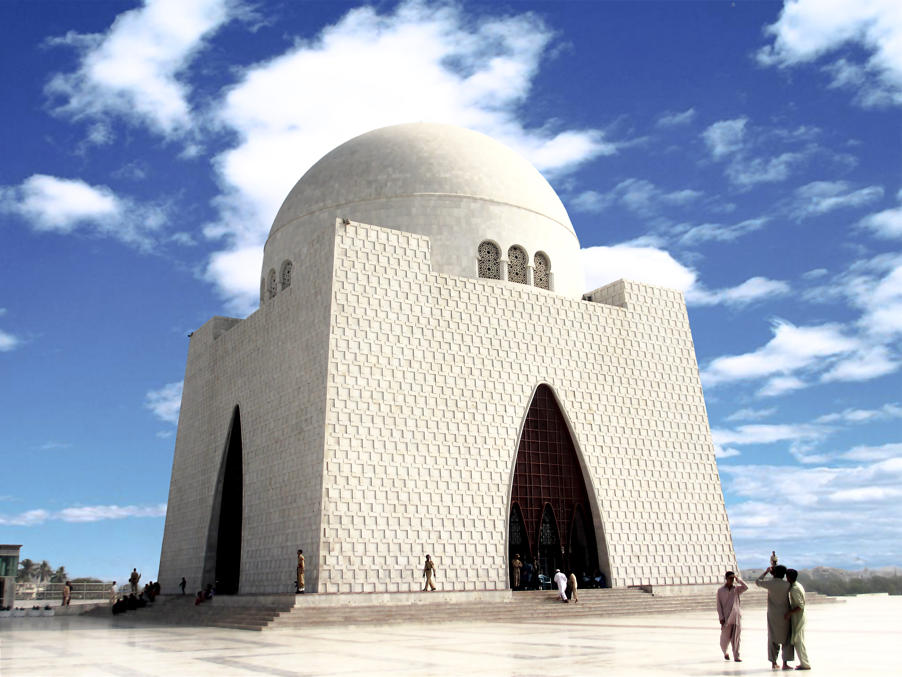

Karachi is Pakistan's largest city and its economic and financial powerhouse. Located on
the coast of the Arabian Sea in Sindh province, Karachi is a sprawling metropolis that is
home to over 16 million people, making it one of the most populous cities in the world.
Its bustling seaport, dynamic arts scene, and diverse culinary landscape make it a truly
world-class destination.
Province: Sindh |
Population: ~16 million |
Best Season: November – February
Top Attractions
Clifton Beach
Clifton Beach is Karachi's most popular seafront, stretching along the Arabian Sea.
Visitors can enjoy camel and horse rides, local food stalls serving chaat and corn on
the cob, and vibrant evening crowds. The adjacent Sea View area offers restaurants with
panoramic ocean views.

Fig. 1 – Clifton Beach, Karachi, is a favourite weekend destination for residents and tourists
Mazar-e-Quaid (Quaid's Mausoleum)
The resting place of Pakistan's founding father, Muhammad Ali Jinnah, is an iconic
white marble structure in the heart of Karachi. The mausoleum features a broad platform
with four corner arches, a central dome, and a serene reflecting pool. The changing of
the guard ceremony draws thousands of visitors each week.

Fig. 2 – Mazar-e-Quaid, the tomb of Pakistan's founder Muhammad Ali Jinnah
Mohatta Palace Museum
Built in 1927, the Mohatta Palace is a stunning example of Indo-Saracenic architecture.
Today it operates as a museum displaying ancient artefacts, manuscripts, paintings, and
decorative arts that trace Sindh's millennia-old civilisation from the Indus Valley
Civilisation through the Mughal and British periods.
Karachi Zoological Gardens
Established in 1878 during British rule, the Karachi Zoo is one of the oldest zoos in
South Asia. It houses Bengal tigers, lions, hippopotamuses, Indian rhinoceroses, and
hundreds of bird species, making it a beloved destination for families.
At a Glance
Feature
Detail
WaterFront
Clifton Beach, Sea View, French Beach
Famous Food
Biryani, Bun Kebab, Haleem, Malai Boti
Language
Urdu, Sindhi, English
Airport
Jinnah International Airport (KHI)
Climate (Nov–Feb)
Mild and breezy, 15°C – 28°C
Travel Tips
Visit Clifton Beach in the early evening for the best atmosphere and sea breeze.
Try Karachi's iconic Biryani from Burns Road food street — widely regarded as the best in Pakistan.
Use ride-hailing apps (InDrive, Careem) for safe and convenient city travel.
Plan a visit to Empress Market for a vibrant, old-city shopping experience.
Avoid the summer monsoon months (July–August) as flash flooding can disrupt travel.